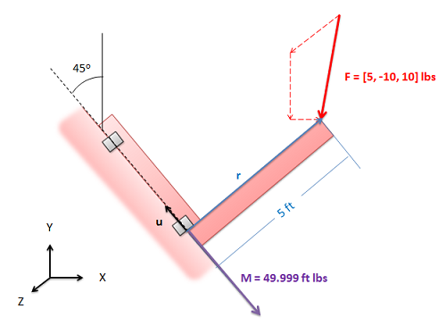

Moment of a Force about an Axis
It is sometimes useful to be able to calculate the moment a force exerts about a certain set axis, an axis that you choose for some specific reason. An example would be a force on the door shown in the diagram below. If we took the moment about a point (say one of the hinges) we would find the axis of rotation of the moment does not line up with the axis the door actually rotates around. This is because the hinges only allow the door to rotate in a certain way; the door is constrained by the hinges. It would be useful in this case to determine the moment about the axis the door can rotate about.
To find the moment about a specific axis you can following two steps.
- First solve for the moment the force exerts about some point on the desired axis of rotation.
- Next we will project this moment vector onto the axis of rotation. This is equivalent to finding the component of the moment vector in the direction of the axis of rotation. To project the vector onto the axis of rotation, we will use the dot product. Specifically, the moment about the given axis is equal to the moment about the point dot a unit vector along the desired axis.
If we reduce this all to a single equation we find the following formula.
\[ \mathrm{ M_I= \mathbf{u} \bullet (\mathbf{r} \times \mathbf{F}) }\]Where \( \mathrm{M_I} \) is the moment about the specified axis, u is a unit vector along the specified axis, r is the distance vector from a point along the desired axis to a point on the line of action of the force vector, and F is the force vector.
The formula above will result in a single number, not a vector. This number indicates the magnitude of the moment vector in the direction of the unit vector u. If you end up with a negative value this means that the moment vector points in the opposite direction of u.
Worked Problems
Worked Problem 1:
Find the moment force F exerts about the axis marked by the dashed black line. (Note: everything lies in the XY plane except for the force vector.)
|
Work
|
Comments |
| \[ \mathrm{ M_I= \mathbf{u} \bullet (\mathbf{r} \times \mathbf{F}) }\] |
To find the moment about the specified axis we will be using the formula to the left. |

|
Before we can use the formula above, we need to find both u and r. The diagram to the left shows two possible u and r vectors. Remember u is a unit vector along the desired axis (it has a magnitude of 1) and r is a vector from the desired axis to the line of action of the force vector. |
| \[ \mathrm{ M_I= [-.707, .707, 0] \bullet ([3.536, 3.536, 0] \times [5, -10, 10]) }\] \[ \mathrm{ M_I= [-.707, .707, 0] \bullet [35.36, -35.36, -53.04] }\] \[ \mathrm{ M_I= -49.999 \text{ ft lbs} }\] |
Now that we have values for u and r, we can solve for the moment about the desired axis \( \mathrm{M_I} \). We simply plug the values into the equation we had earlier and solve the equation for \( \mathrm{M_I} \). |
|

|
The negative value for \( \mathrm{M_I} \) indicates that the moment vector points in the opposite direction from the unit vector that we chose (u). To the left, the moment is shown on the original diagram of the part. |
 |
| Author: Jacob Moore has liscenced this work under a Creative Commons Attribution-NonCommercial 3.0 Unported License. |